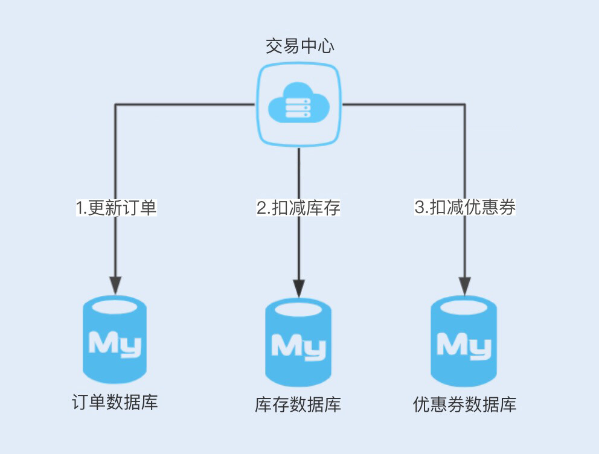
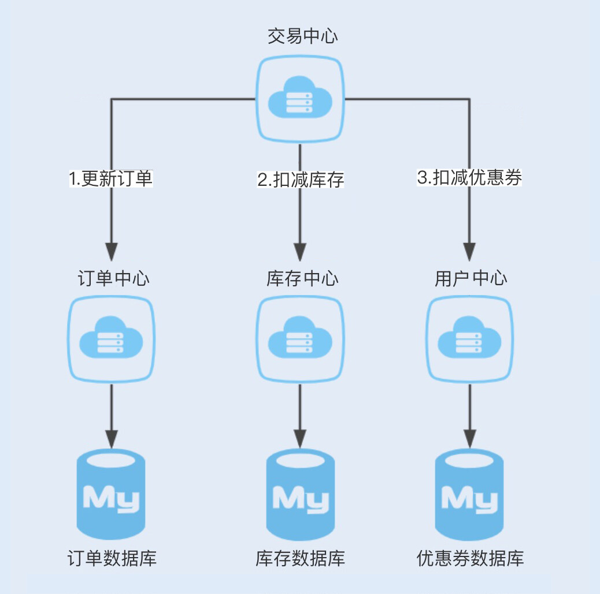
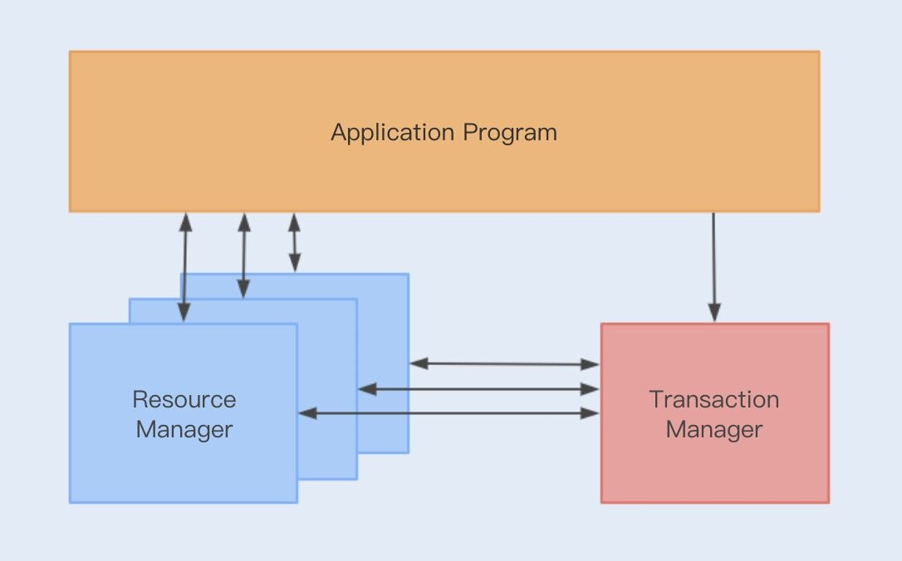
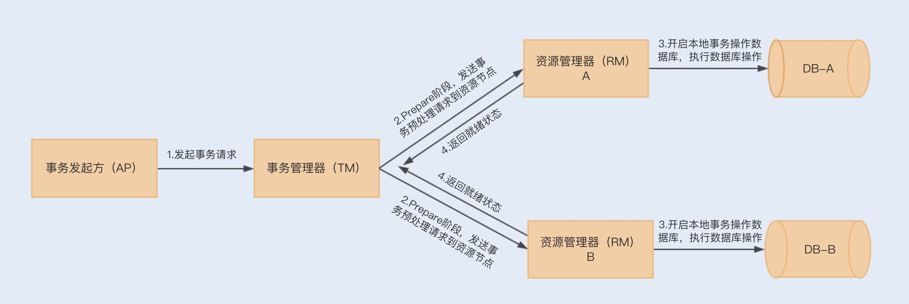
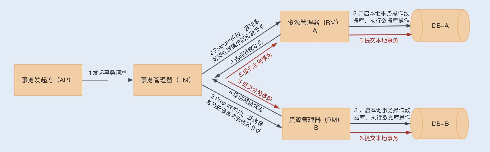
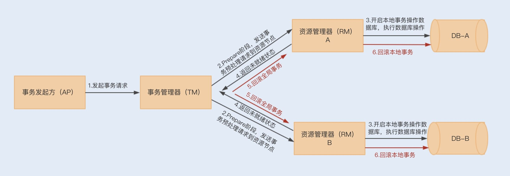
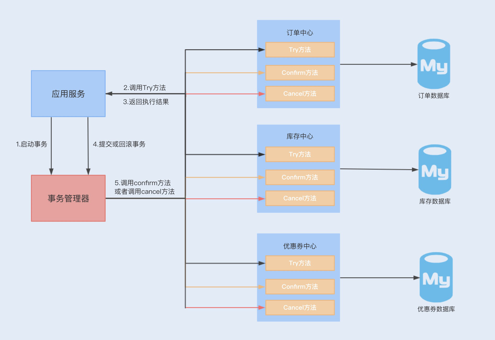
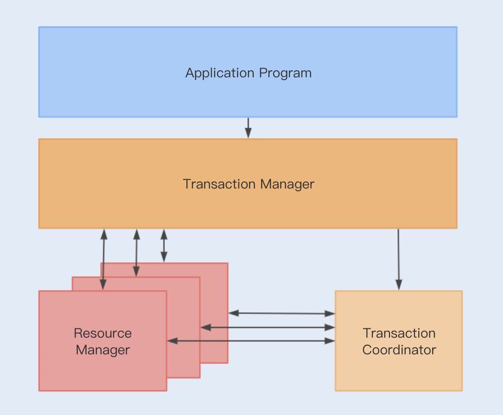

- 00 开篇词你为什么需要学习并发编程？.md.html
- 01 如何制定性能调优标准？.md.html
- 02 如何制定性能调优策略？.md.html
- 03 字符串性能优化不容小觑，百M内存轻松存储几十G数据.md.html
- 04 慎重使用正则表达式.md.html
- 05 ArrayList还是LinkedList？使用不当性能差千倍.md.html
- 06 Stream如何提高遍历集合效率？.md.html
- 07 深入浅出HashMap的设计与优化.md.html
- 08 网络通信优化之IO模型：如何解决高并发下IO瓶颈？.md.html
- 09 网络通信优化之序列化：避免使用Java序列化.md.html
- 10 网络通信优化之通信协议：如何优化RPC网络通信？.md.html
- 11 答疑课堂：深入了解NIO的优化实现原理.md.html
- 12 多线程之锁优化（上）：深入了解Synchronized同步锁的优化方法.md.html
- 13 多线程之锁优化（中）：深入了解Lock同步锁的优化方法.md.html
- 14 多线程之锁优化（下）：使用乐观锁优化并行操作.md.html
- 15 多线程调优（上）：哪些操作导致了上下文切换？.md.html
- 16 多线程调优（下）：如何优化多线程上下文切换？.md.html
- 17 并发容器的使用：识别不同场景下最优容器.md.html
- 18 如何设置线程池大小？.md.html
- 19 如何用协程来优化多线程业务？.md.html
- 20 磨刀不误砍柴工：欲知JVM调优先了解JVM内存模型.md.html
- 21 深入JVM即时编译器JIT，优化Java编译.md.html
- 22 如何优化垃圾回收机制？.md.html
- 23 如何优化JVM内存分配？.md.html
- 24 内存持续上升，我该如何排查问题？.md.html
- 25 答疑课堂：模块四热点问题解答.md.html
- 26 单例模式：如何创建单一对象优化系统性能？.md.html
- 27 原型模式与享元模式：提升系统性能的利器.md.html
- 28 如何使用设计模式优化并发编程？.md.html
- 29 生产者消费者模式：电商库存设计优化.md.html
- 30 装饰器模式：如何优化电商系统中复杂的商品价格策略？.md.html
- 31 答疑课堂：模块五思考题集锦.md.html
- 32 MySQL调优之SQL语句：如何写出高性能SQL语句？.md.html
- 33 MySQL调优之事务：高并发场景下的数据库事务调优.md.html
- 34 MySQL调优之索引：索引的失效与优化.md.html
- 35 记一次线上SQL死锁事故：如何避免死锁？.md.html
- 36 什么时候需要分表分库？.md.html
- 37 电商系统表设计优化案例分析.md.html
- 38 数据库参数设置优化，失之毫厘差之千里.md.html
- 39 答疑课堂：MySQL中InnoDB的知识点串讲.md.html
- 41 如何设计更优的分布式锁？.md.html
- 42 电商系统的分布式事务调优.md.html
- 43 如何使用缓存优化系统性能？.md.html
- 44 记一次双十一抢购性能瓶颈调优.md.html
- 加餐 什么是数据的强、弱一致性？.md.html
- 加餐 推荐几款常用的性能测试工具.md.html
- 答疑课堂：模块三热点问题解答.md.html
- 结束语 栉风沐雨，砥砺前行！.md.html
42 电商系统的分布式事务调优
你好，我是刘超。
今天的分享也是从案例开始。我们团队曾经遇到过一个非常严重的线上事故，在一次 DBA 完成单台数据库线上补丁后，系统偶尔会出现异常报警，我们的开发工程师很快就定位到了数据库异常问题。
具体情况是这样的，当玩家购买道具之后，扣除通宝时出现了异常。这种异常在正常情况下发生之后，应该是整个购买操作都需要撤销，然而这次异常的严重性就是在于玩家购买道具成功后，没有扣除通宝。
究其原因是由于购买的道具更新的是游戏数据库，而通宝是在用户账户中心数据库，在一次购买道具时，存在同时操作两个数据库的情况，属于一种分布式事务。而我们的工程师在完成玩家获得道具和扣除余额的操作时，没有做到事务的一致性，即在扣除通宝失败时，应该回滚已经购买的游戏道具。
从这个案例中，我想你应该意识到了分布式事务的重要性。
如今，大部分公司的服务基本都实现了微服务化，首先是业务需求，为了解耦业务；其次是为了减少业务与业务之间的相互影响。
电商系统亦是如此，大部分公司的电商系统都是分为了不同服务模块，例如商品模块、订单模块、库存模块等等。事实上，分解服务是一把双刃剑，可以带来一些开发、性能以及运维上的优势，但同时也会增加业务开发的逻辑复杂度。其中最为突出的就是分布式事务了。
通常，存在分布式事务的服务架构部署有以下两种：同服务不同数据库，不同服务不同数据库。我们以商城为例，用图示说明下这两种部署：


通常，我们都是基于第二种架构部署实现的，那我们应该如何实现在这种服务架构下，有关订单提交业务的分布式事务呢？
分布式事务解决方案
我们讲过，在单个数据库的情况下，数据事务操作具有 ACID 四个特性，但如果在一个事务中操作多个数据库，则无法使用数据库事务来保证一致性。
也就是说，当两个数据库操作数据时，可能存在一个数据库操作成功，而另一个数据库操作失败的情况，我们无法通过单个数据库事务来回滚两个数据操作。
而分布式事务就是为了解决在同一个事务下，不同节点的数据库操作数据不一致的问题。在一个事务操作请求多个服务或多个数据库节点时，要么所有请求成功，要么所有请求都失败回滚回去。通常，分布式事务的实现有多种方式，例如 XA 协议实现的二阶提交（2PC）、三阶提交 (3PC)，以及 TCC 补偿性事务。
在了解 2PC 和 3PC 之前，我们有必要先来了解下 XA 协议。XA 协议是由 X/Open 组织提出的一个分布式事务处理规范，目前 MySQL 中只有 InnoDB 存储引擎支持 XA 协议。
1. XA 规范
在 XA 规范之前，存在着一个 DTP 模型，该模型规范了分布式事务的模型设计。
DTP 规范中主要包含了 AP、RM、TM 三个部分，其中 AP 是应用程序，是事务发起和结束的地方；RM 是资源管理器，主要负责管理每个数据库的连接数据源；TM 是事务管理器，负责事务的全局管理，包括事务的生命周期管理和资源的分配协调等。

XA 则规范了 TM 与 RM 之间的通信接口，在 TM 与多个 RM 之间形成一个双向通信桥梁，从而在多个数据库资源下保证 ACID 四个特性。
这里强调一下，JTA 是基于 XA 规范实现的一套 Java 事务编程接口，是一种两阶段提交事务。我们可以通过源码简单了解下 JTA 实现的多数据源事务提交。
2. 二阶提交和三阶提交
XA 规范实现的分布式事务属于二阶提交事务，顾名思义就是通过两个阶段来实现事务的提交。
在第一阶段，应用程序向事务管理器（TM）发起事务请求，而事务管理器则会分别向参与的各个资源管理器（RM）发送事务预处理请求（Prepare），此时这些资源管理器会打开本地数据库事务，然后开始执行数据库事务，但执行完成后并不会立刻提交事务，而是向事务管理器返回已就绪（Ready）或未就绪（Not Ready）状态。如果各个参与节点都返回状态了，就会进入第二阶段。

到了第二阶段，如果资源管理器返回的都是就绪状态，事务管理器则会向各个资源管理器发送提交（Commit）通知，资源管理器则会完成本地数据库的事务提交，最终返回提交结果给事务管理器。

在第二阶段中，如果任意资源管理器返回了未就绪状态，此时事务管理器会向所有资源管理器发送事务回滚（Rollback）通知，此时各个资源管理器就会回滚本地数据库事务，释放资源，并返回结果通知。

但事实上，二阶事务提交也存在一些缺陷。
第一，在整个流程中，我们会发现各个资源管理器节点存在阻塞，只有当所有的节点都准备完成之后，事务管理器才会发出进行全局事务提交的通知，这个过程如果很长，则会有很多节点长时间占用资源，从而影响整个节点的性能。
一旦资源管理器挂了，就会出现一直阻塞等待的情况。类似问题，我们可以通过设置事务超时时间来解决。
第二，仍然存在数据不一致的可能性，例如，在最后通知提交全局事务时，由于网络故障，部分节点有可能收不到通知，由于这部分节点没有提交事务，就会导致数据不一致的情况出现。
而三阶事务（3PC）的出现就是为了减少此类问题的发生。
3PC 把 2PC 的准备阶段分为了准备阶段和预处理阶段，在第一阶段只是询问各个资源节点是否可以执行事务，而在第二阶段，所有的节点反馈可以执行事务，才开始执行事务操作，最后在第三阶段执行提交或回滚操作。并且在事务管理器和资源管理器中都引入了超时机制，如果在第三阶段，资源节点一直无法收到来自资源管理器的提交或回滚请求，它就会在超时之后，继续提交事务。
所以 3PC 可以通过超时机制，避免管理器挂掉所造成的长时间阻塞问题，但其实这样还是无法解决在最后提交全局事务时，由于网络故障无法通知到一些节点的问题，特别是回滚通知，这样会导致事务等待超时从而默认提交。
3. 事务补偿机制（TCC）
以上这种基于 XA 规范实现的事务提交，由于阻塞等性能问题，有着比较明显的低性能、低吞吐的特性。所以在抢购活动中使用该事务，很难满足系统的并发性能。
除了性能问题，JTA 只能解决同一服务下操作多数据源的分布式事务问题，换到微服务架构下，可能存在同一个事务操作，分别在不同服务上连接数据源，提交数据库操作。
而 TCC 正是为了解决以上问题而出现的一种分布式事务解决方案。TCC 采用最终一致性的方式实现了一种柔性分布式事务，与 XA 规范实现的二阶事务不同的是，TCC 的实现是基于服务层实现的一种二阶事务提交。
TCC 分为三个阶段，即 Try、Confirm、Cancel 三个阶段。

- Try 阶段：主要尝试执行业务，执行各个服务中的 Try 方法，主要包括预留操作；
- Confirm 阶段：确认 Try 中的各个方法执行成功，然后通过 TM 调用各个服务的 Confirm 方法，这个阶段是提交阶段；
- Cancel 阶段：当在 Try 阶段发现其中一个 Try 方法失败，例如预留资源失败、代码异常等，则会触发 TM 调用各个服务的 Cancel 方法，对全局事务进行回滚，取消执行业务。
以上执行只是保证 Try 阶段执行时成功或失败的提交和回滚操作，你肯定会想到，如果在 Confirm 和 Cancel 阶段出现异常情况，那 TCC 该如何处理呢？此时 TCC 会不停地重试调用失败的 Confirm 或 Cancel 方法，直到成功为止。
但 TCC 补偿性事务也有比较明显的缺点，那就是对业务的侵入性非常大。
首先，我们需要在业务设计的时候考虑预留资源；然后，我们需要编写大量业务性代码，例如 Try、Confirm、Cancel 方法；最后，我们还需要为每个方法考虑幂等性。这种事务的实现和维护成本非常高，但综合来看，这种实现是目前大家最常用的分布式事务解决方案。
4. 业务无侵入方案——Seata(Fescar)
Seata 是阿里去年开源的一套分布式事务解决方案，开源一年多已经有一万多 star 了，可见受欢迎程度非常之高。
Seata 的基础建模和 DTP 模型类似，只不过前者是将事务管理器分得更细了，抽出一个事务协调器（Transaction Coordinator 简称 TC），主要维护全局事务的运行状态，负责协调并驱动全局事务的提交或回滚。而 TM 则负责开启一个全局事务，并最终发起全局提交或全局回滚的决议。如下图所示：

按照Github中的说明介绍，整个事务流程为：
- TM 向 TC 申请开启一个全局事务，全局事务创建成功并生成一个全局唯一的 XID；
- XID 在微服务调用链路的上下文中传播；
- RM 向 TC 注册分支事务，将其纳入 XID 对应全局事务的管辖；
- TM 向 TC 发起针对 XID 的全局提交或回滚决议；
- TC 调度 XID 下管辖的全部分支事务完成提交或回滚请求。
Seata 与其它分布式最大的区别在于，它在第一提交阶段就已经将各个事务操作 commit 了。Seata 认为在一个正常的业务下，各个服务提交事务的大概率是成功的，这种事务提交操作可以节约两个阶段持有锁的时间，从而提高整体的执行效率。
那如果在第一阶段就已经提交了事务，那我们还谈何回滚呢？
Seata 将 RM 提升到了服务层，通过 JDBC 数据源代理解析 SQL，把业务数据在更新前后的数据镜像组织成回滚日志，利用本地事务的 ACID 特性，将业务数据的更新和回滚日志的写入在同一个本地事务中提交。
如果 RM 决议要全局回滚，会通知 RM 进行回滚操作，通过 XID 找到对应的回滚日志记录，通过回滚记录生成反向更新 SQL，进行更新回滚操作。
以上我们可以保证一个事务的原子性和一致性，但隔离性如何保证呢？
Seata 设计通过事务协调器维护的全局写排它锁，来保证事务间的写隔离，而读写隔离级别则默认为未提交读的隔离级别。
总结
在同服务多数据源操作不同数据库的情况下，我们可以使用基于 XA 规范实现的分布式事务，在 Spring 中有成熟的 JTA 框架实现了 XA 规范的二阶事务提交。事实上，二阶事务除了性能方面存在严重的阻塞问题之外，还有可能导致数据不一致，我们应该慎重考虑使用这种二阶事务提交。
在跨服务的分布式事务下，我们可以考虑基于 TCC 实现的分布式事务，常用的中间件有 TCC-Transaction。TCC 也是基于二阶事务提交原理实现的，但 TCC 的二阶事务提交是提到了服务层实现。TCC 方式虽然提高了分布式事务的整体性能，但也给业务层带来了非常大的工作量，对应用服务的侵入性非常强，但这是大多数公司目前所采用的分布式事务解决方案。
Seata 是一种高效的分布式事务解决方案，设计初衷就是解决分布式带来的性能问题以及侵入性问题。但目前 Seata 的稳定性有待验证，例如，在 TC 通知 RM 开始提交事务后，TC 与 RM 的连接断开了，或者 RM 与数据库的连接断开了，都不能保证事务的一致性。
思考题
Seata 在第一阶段已经提交了事务，那如果在第二阶段发生了异常要回滚到 Before 快照前，别的线程若是更新了数据，且业务走完了，那么恢复的这个快照不就是脏数据了吗？但事实上，Seata 是不会出现这种情况的，你知道它是怎么做到的吗？